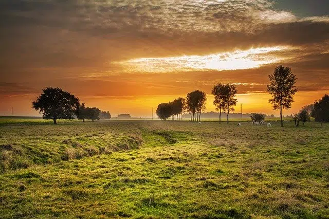

O Campo
O campo é caracterizado por sua beleza natural e tranquilidade. Em regiões rurais, é comum encontrar vastas áreas de vegetação, como campos e florestas, além de práticas agrícolas e pecuárias. A vida no campo é muitas vezes mais calmo e menos agitada em comparação com a cidade, proporcionando uma conexão mais direta com a natureza e uma sensação de paz.
Os habitantes do campo frequentemente desfrutam de um ambiente menos poluído e uma comunidade mais coesa. As atividades diárias estão frequentemente relacionadas à agricultura e à criação de animais, o que contribui para um estilo de vida simples e mais próximo da natureza.
A Cidade

A cidade é um centro de atividade intensa, com arranha-céus, ruas movimentadas e uma infraestrutura avançada. As áreas urbanas oferecem uma ampla gama de serviços e oportunidades de emprego, bem como opções culturais e de entretenimento. A vida na cidade é caracterizada por seu ritmo acelerado e pela diversidade de experiências disponíveis.
Embora a cidade apresente desafios como poluição e congestionamento, ela também é um local de inovação e dinamismo. Os residentes têm acesso a uma variedade de recursos, desde centros de saúde até instituições educacionais e culturais, o que contribui para um estilo de vida vibrante e conectado.
Atividades no Campo

O campo oferece uma variedade de atividades relacionadas à agricultura e à vida rural. Desde a colheita de grãos até o cuidado com os animais, essas atividades são fundamentais para a vida no campo. A produção de alimentos e a manutenção da paisagem natural são aspectos importantes da vida rural.
Além das atividades agrícolas, o campo também é um lugar para desfrutar de atividades ao ar livre, como caminhadas e passeios a cavalo. A tranquilidade e a beleza do ambiente natural proporcionam uma experiência enriquecedora para os visitantes e residentes.
Atividades na Cidade

A vida na cidade é cheia de oportunidades para atividades culturais e sociais. Desde visitar museus e teatros até explorar restaurantes e eventos locais, as cidades oferecem uma rica variedade de experiências para os moradores e visitantes.
As cidades também são centros de comércio e negócios, com diversas opções de compras e centros de entretenimento. A vida urbana proporciona uma gama diversificada de atividades que atendem a todos os interesses e idades.